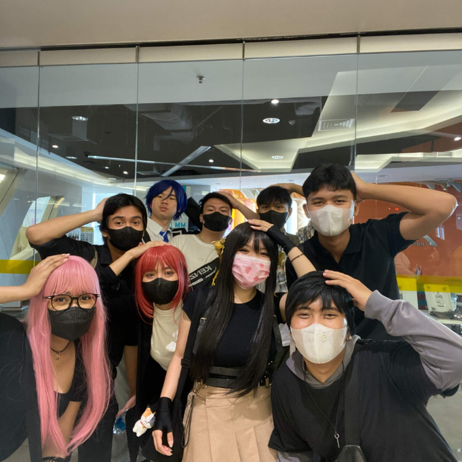
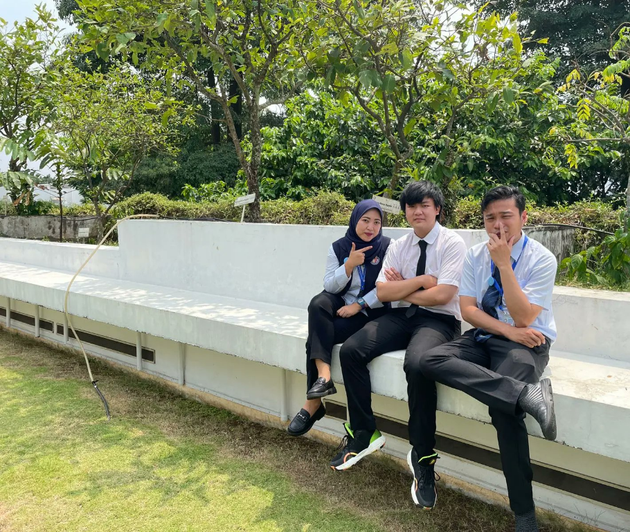
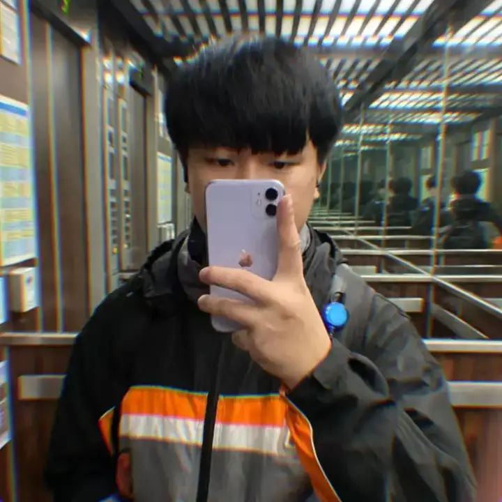

01 / COSPLAYA day with friendsPERSONAL WEBSITE & JOURNAL
A little corner
of the internet.
Hey, I'm Yavin. This is where I share what I'm learning, what I'm into, and the things I find worth keeping.
THE NOTEBOOK
Latest writing.

02 / PERSONALHigh school memoriesMy Part-Time Work Mentor in High School.
Memories with the mentor who guided me during my part-time job in vocational high school.
Read article ↗
03 / PERSONALSchool days in TaiwanSchool in Taiwan.
A few snapshots from school life, classmates, and everyday moments in Taiwan.
Read article ↗OPEN TO A HELLO
Find me on Discord.
Want to talk about something you read, share a recommendation, or just say hi? Reach me on Discord.